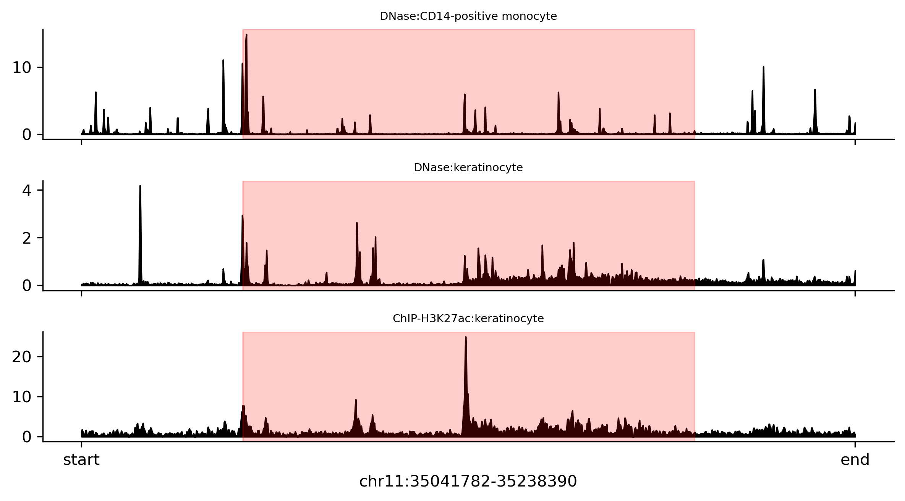

gdata.GenomeDataLoader#
- class gdata.GenomeDataLoader(self, /, location, *, batch_size=8, resolution=None, target_length=None, scale=None, clamp_max=None, window_size=None, shuffle=False, random_shift=0, seq_as_string=False, n_jobs=8, random_seed=2025)#
A dataloader for genomic data, allowing for efficient retrieval of genomic sequences and their associated values.
This object provides an iterator over genomic data chunks, enabling batch retrieval of genomic sequences and their associated values. The iterator yields tuples of (sequences, values). Sequences has shape (batch_size, sequence_length), and values has shape (batch_size, sequence_length / resolution, num_tracks).
- Parameters:
location (Path) – The path to the genomic data directory.
batch_size (int) – The number of genomic sequences to retrieve in each batch (default is 8).
resolution (Optional[int]) – The resolution of the genomic data. If not provided, it defaults to the dataset’s resolution. If the resolution is provided, it must be a multiple of the dataset’s resolution. The values will be aggregated (by taking the average) to this resolution.
trim_target (Optional[int]) – Trim both ends of the target vector according to the
trim_targetparameter. As a result, the length of the values will be reduced by2 * trim_target. The unit oftrim_targetis base pairs, and it must be a multiple of the resolution. Note this only affects the values, not the sequences. The sequences will always have the full length as defined in the dataset. This is useful when you want to compute the loss on only the central part of the sequence. This is because the edges of the sequence may contain padding or other artifacts that should not be considered in the loss computation.scale (Optional[float]) – Scale the values by this factor. If not provided, no scaling is applied.
clamp_max (Optional[float]) – Clamp the values to this maximum value. If not provided, no clamping is applied. If
scaleis also provided, the clamping will be applied after scaling.window_size (Optional[int]) – The window size for retrieving genomic sequences. The loader’s window size can be different from the underlying dataset’s window size so that the same dataset can be used with different window sizes. However, there are two restrictions: (1) The dataset’s window size must be a multiple of the loader’s window size; (2) The loader’s window size must be a multiple of the dataset’s resolution.
shuffle (bool) – If True, the data will be shuffled before being returned. Default is False.
random_shift (int) – The maximum random shift (in base pairs) to apply to the start position of each sequence. The actual shift will be randomly chosen from the range [-random_shift, random_shift]. This is useful for data augmentation, as it introduces variability in the sequences retrieved from the dataset.
seq_as_string (bool) – If True, sequences will be returned as strings instead of numpy integer arrays. This is useful for cases where you want to work with the sequences as text, such as for visualization or text-based analysis.
n_jobs (int) – The number of parallel jobs to use for loading data. This allows for asynchronous loading of data, improving performance during training or inference. But it will increase memory usage, the memory usage will be approximately
2 * n_jobs * memory_of_chunk.random_seed (int) – The random seed for shuffling the data. Default is 2025.
See also
Examples
>>> from gdata import as GenomeDataLoader >>> loader = GenomeDataLoader("test_genome", trim_target=40_960) >>> region = 'chr11:35041782-35238390' >>> tracks = ['DNase:CD14-positive monocyte', 'DNase:keratinocyte', 'ChIP-H3K27ac:keratinocyte'] >>> loader.plot(region, tracks, savefig="signal.png")
Attributes
Returns the data indexer for accessing genomic data.
Returns the segments of the genome as a vector of strings.
The length of the target vector in base pairs.
Returns the track names in the dataset.
The length of input sequences in base pairs.
Methods
copy()Create a copy of the GenomeDataLoader.
difference(regions)Creating a new genomic data loader in which the regions differ from the specified ones.
hist(*[, bins, limit, min, log, savefig])intersection(regions)Creating a new genomic data loader in which the regions intersect with the specified ones.
plot(region, tracks, *[, savefig])Plots the genomic signal for a specified region and tracks.